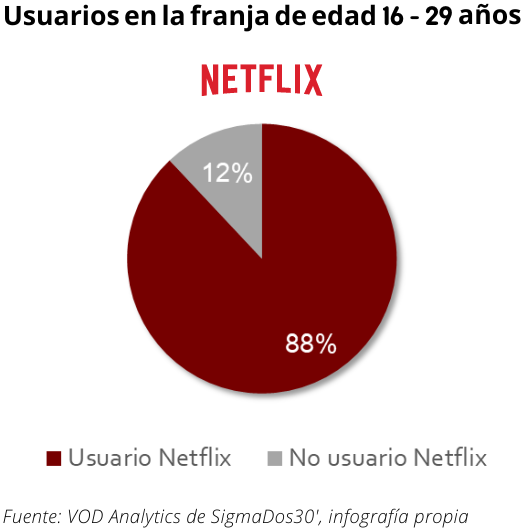
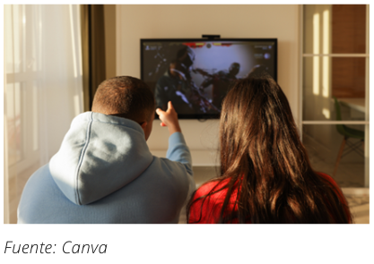

MARKETING EN LAS SERIES Y SU EFECTO EN EL CONSUMO
Como hemos visto, no es una novedad que la televisión y el cine imponen modas a través de películas y series, donde se presentan estilos de vida diferentes que se adaptan a distintos tipos de consumidores. De esta manera, se exponen formas de entender la importancia de la apariencia externa, que el público asimila y con el que se logran procesos de imitación gracias al sentimiento de empatía. De esa forma, los estándares de vida que se promueven crean determinadas actitudes de consumo de moda.
También, por otra parte, este hecho se debe a la asociación con personajes famosos, puesto que la unión entre la fama y la moda es crucial en el mundo de la publicidad y el marketing. Las firmas utilizan a los rostros más populares para promocionar sus artículos, y es así como los productos de ficción inciden en la configuración del imaginario social, haciendo que los espectadores imiten comportamientos a la hora de vestirse, según lo que han visto en ciertos iconos mediáticos. Por tanto, la moda queda reflejada a través de los medios de comunicación de manera directa a través de la publicidad y de estereotipos que representan los personajes audiovisuales. El lenguaje de la moda es una constante en numerosas producciones, que reflejan los comportamientos y estilos de vida contemporáneos, pues en la mayoría de narrativas audiovisuales se muestran algunos modos de seducción donde el vestuario marca la identidad física.
Asimismo, la moda forma parte no solo de la puesta en escena, sino del propio discurso dialéctico, proyectando en el espectador hábitos que tenderá a imitar en su vida cotidiana. El vestuario es un lenguaje más en el cine y las series de televisión, tanto es así que muchas colecciones se han inspirado en atuendos de la gran pantalla.
¿Cuál es la apuesta de Netflix y otras plataformas?
 Netflix es una de las marcas que mayor notoriedad global ha adquirido en los últimos años a raíz de su política estratégica, volumen de negocio, política de comunicación, y oferta de contenidos. El principal aspecto estratégico en las comunicaciones integradas de marca dentro del caso de Netflix es el marketing de contenidos, o branded content. Se utilizan los contenidos que ofrece la plataforma en todo tipo de acciones de comunicación no intrusivas con el objetivo de conectar de forma relevante con el target, que en este caso, se enfoca principalmente en la franja de edad de los 16 a los 29 años, pues un 88% de estos son usuarios de la plataforma.
Intencionadamente o no, una de las acciones de comunicación de la plataforma es crear tendencia, ya sea en estilos de vida, en alimentos, en relaciones personales y, cómo no, en moda. Y teniendo en cuenta, que predominan los usuarios de perfil joven, para los creadores es más sencillo perpetrar en ellos el deseo de consumir un determinado producto. Aunque, como señalaba Lucía Tello al principio del reportaje, no deben, per se, ser más influenciables; sí que gozan de un carácter con una mayor predisposición de adaptación al contexto.
El consumo de moda inspirado en las series: las cifras
 La mayor parte de las series que han generado un boom en las ventas, son aquellas que están dirigidas al público joven y adolescente, y no solo en Netflix; ocurre con todas las plataformas de streaming. De la misma forma que los compradores de esos productos promocionales o inspirados son, una vez más, jóvenes. De aquí que se produzcan un efecto de retroalimentación. Según los datos de la tienda online Lyst, las búsquedas relacionadas con el “screen style” han descubierto tendencias independientes de las generadas por el ritmo de colecciones de la industria. En su último informe, la plataforma de compra de moda recoge 3 populares series que han provocado picos de búsqueda a nivel global: Euphoria, Lupin y Call my agent. Si nos fijamos en la serie de HBO Euphoria, con el anuncio de la llegada de su segunda temporada y la emisión de dos episodios especiales ha provocado que los usuarios de Lyst se lancen a buscar moda relacionada con la serie. Las búsquedas para la marca Collina Strada crecieron un 154 %. Entre los productos de la marca más buscados fueron una falda maxi y un top transparente de estampado tie-dye. Las búsquedas para la camisa de estampado psicodélico de Stussy que llevó Rue aumentaron un 50 % y la camisa está actualmente agotada. Además, se ha registrado un aumento del interés en Vans blancas sin cordones y faldas de tablas con estampado escocés.
El pico del éxito de La Casa de Papel lo obtuvieron en 2019. La acogida fue tal que casi se vendieron medio millón de euros en disfraces de monos rojos y máscaras de Dalí, convirtiéndose en los productos más vendidos del mundo en ese momento.
Por su parte, Stranger Things tiene todo tipo de merchandising, desde zapatillas Nike, pasando por tazas y hasta una versión del juego Monopoly. Pero la prenda que se ha convertido en un inesperado objeto de deseo para los fans de la serie de Netflix aparece en la segunda temporada a través del personaje de Dustin, un apasionado de la ciencia, que luce una sudadera que ha arrasado en ventas en cuestión de pocas horas. Se trata de un modelo con capucha de color lila con el dibujo del esqueleto de un brontosaurio que corresponde a la tienda de recuerdos del Museo de la Ciencia de Minnesota. Tras ver el interés generado, la institución anunciaba que volvía a poner a la venta la sudadera, así como una línea de camisetas. En apenas unas horas, llegó a facturar cerca de 400.000 dólares.
En definitiva, esta travesía por el mundo de las series, la moda, los medios y el consumo, me ha hecho entender que el auge de las producciones audiovisuales se ha traducido en un interés inmediato por lo que llevan sus protagonistas. El impacto global, instantáneo y cada vez más frecuente de las series está provocando un notorio aumento en las ventas. Al igual que las firmas pagan por aparecer en las cuentas de redes sociales más influyentes, también quieren tener presencia en otro escaparate internacional: las plataformas de streaming. No solo por el valor incalculable que supone para las marcas que sus prendas se expongan en la pantalla en términos de ventas, sino porque generan un sentimiento de pertenencia en el espectador.
La moda forma parte de la vida de los jóvenes. Está latente en la cotidianeidad, en su cultura visual y conforma sus rasgos identitarios, para definir los valores y características de su época. Así, la moda es el reflejo de una sociedad cambiante, como cualquier otro medio de comunicación social. Los medios masivos de comunicación presentan imágenes llamativas, coloridas, atractivas que dotan de significados la vestimenta, elevándolo a la categoría de signo. Entre la moda y la comunicación existe un estrecho lazo: ambas ocupan un lugar destacado en las sociedades modernas y se han convertido en pilares fundamentales de la sociedad de la Imagen.
Y en cuanto a las series, no importa su género. Las series románticas o de misterio toman prestados los estilos de moda de una época, de películas anteriores o de un modelo concreto con una fuerte identidad, que convence y anima a todos a sumarse a la tendencia. Las marcas famosas y las series de Netflix destacan las tendencias de la moda. Pero, ¿quién influye en quién?
Al final, la moda y las series son elementos que se retroalimentan, siendo la sociedad la mediadora entre ellas. A la pregunta ¿qué comunica la moda a través de las series de Netflix?, mi respuesta es que sirve como herramienta para definir a los personajes, para incitar a ser de una determinada forma, para generar ventas, para crear un sentimiento de identificación, y para idear y modificar tendencias. La moda de las series recoge gustos y formas del momento, configurando estereotipos y estilos. La autora de moda, Patrizia Calefato lo describe a la perfección; la moda va de lo social a lo cinematográfico y viceversa.
Ahora, la idea es cuestionar la industria, y también, por qué no, hacer que la gente se cuestione sus hábitos a la hora de ver una serie y tomar ciertas decisiones, no para que las cambie necesariamente, sino para que actúe de forma consciente.
© 2022 - Andrea Higuera Herrero
QUÉ COMUNICA LA MODA A TRAVÉS DE LAS SERIES DE NETFLIX